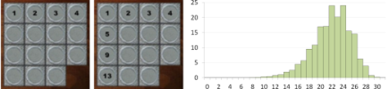
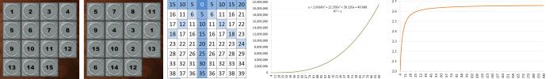
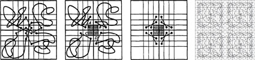
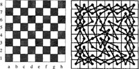
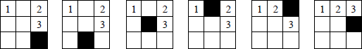

Mathematical Puzzles
Like most geeks I have a casual interest in mathematical puzzles.
The ones that I've had the most interest in over the years include
Rubik's cube,
the knight's tour problem, and the $(n^2-1)$-puzzle.
Only some of those research projects bore fruit, the results of which you can see below.
My coauthors in some of this work include colleague Ingo Wegener and his
then student Oleg Kyek.
Tourneys and Closed Knight's Tours (2020)

Ian Parberry,
"Tourneys and the Fast Generation and Obfuscation of Closed Knight's Tours".
[more information]
Abstract
New algorithms for generating closed knight's tours
are obtained by generating a vertex-disjoint cycle cover of the knight's graph and joining the resulting cycles. It is shown experimentally that these algorithms are significantly faster in practice than previous methods. A fast obfuscation algorithm for closed knight's tours that obscures obvious artifacts created by their method of generation is also given, along
with visual and statistical evidence of its efficacy.
The 15-Puzzle (2015)

Ian Parberry,
"A Memory-Efficient Method for Fast Computation of Short 15-Puzzle Solutions",
IEEE Transactions on Computational Intelligence and AI in Games,
Vol. 7, No. 2, June 2015.
[pdf from IEEEXplore,
more information]
Abstract
While the 15-puzzle has a long and interesting history dating back to the 1870s,
it still continues to appear as
apps on mobile devices and as minigames inside larger video games.
We demonstrate a method for solving the 15-puzzle
using only 4.7MB of tables
that on a million random instances was able to
find solutions of 65 moves on average and
95 moves in the worst case in under a tenth of a millisecond per solution
on current desktop computing hardware.
These numbers compare favorably to the worst-case upper bound of 80 moves
and to the greedy algorithm published in 1995, which required
118 moves on average and
195 moves in the worst case.
The $(n^2-1)$-Puzzle (2015)

Ian Parberry,
"Solving the $(n^2-1)$-Puzzle with $\tfrac{8}{3}n^3$ Expected Moves",
Algorithms,
Vol. 8, No. 3, pp. 459-465, 2015.
[more information]
Abstract
It is shown that the greedy algorithm for the \((n^2-1)\)-puzzle
makes \(\tfrac{8}{3}n^3 +O(n^2)\) expected moves.
This analysis is verified experimentally on 10,000 random
instances each of the \((n^2-1)\)-puzzle for \(4 \leq n \leq 200\).
Computing Knight's Tours (1997)

Ian Parberry,
"An Efficient Algorithm for the Knight's Tour Problem",
Discrete Applied Mathematics, Vol. 73, pp. 251-260, 1997.
[pdf]
Author's Comment
See more knight's tour images here.
Counting Knight's Tours (1997)

O. Kyek,
Ian Parberry,
and I. Wegener,
"Bounds on the Number of Knight's Tours",
Discrete Applied Mathematics, Vol. 74, pp. 171-181, 1997.
[pdf]
Abstract
Knight's tours are a fascinating subject. New lower bounds on the number of knight's tours
and structured knight's tours on $n \times n$ chessboards and even $n$ are presented. For the natural
special case $n = 8$ a new upper bound is proved.
The $(n^2-1)$-Puzzle (1995)

Ian Parberry,
"A Real-Time Algorithm for the
$(n^2-1)$-Puzzle",
Information Processing Letters, Vol. 56, pp. 23-28, 1995.
[pdf]
Abstract
A real-time algorithm for the $(n^2-1)$-puzzle is designed using greedy and divide-and-conquer
techniques. It is proved that (ignoring lower order terms) the new
algorithm uses at most $5n^3$ moves, and that any such algorithm must make at least
$n^3$ moves in the worst case, at least $2n^3/3$ moves on average, and with probability
one, at least $0.264n^3$ moves on random configurations.
Created April 21, 2010.
Last updated January 16, 2020.